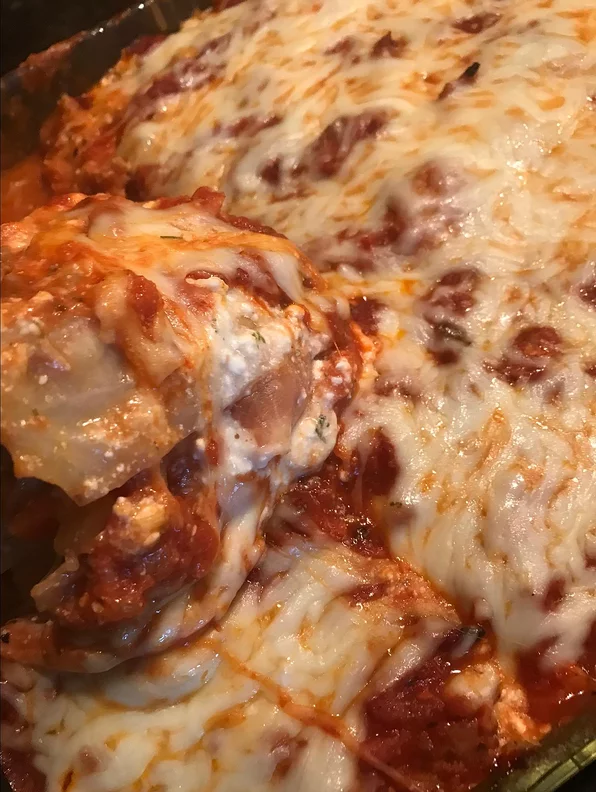

Lasagan Recipe

Description
A very filling, low-carb lasagna that uses cabbage leaves in place of lasagna noodles. We find it every bit as good if not better than lasagna with pasta.
Ingredients
- 1 pound lean ground beef
- 1 medium onion, chopped
- 1 tablespoon minced garlic
- ½ cup grated carrots
- 4 ounces mushroom pieces
- 1 pound canned tomatoes
- 1 tablespoon dried basil
- 1 teaspoon white sugar
- 1 teaspoon salt
- ½ teaspoon thyme
- ¼ teaspoon nutmeg
- 1 head cabbage
- 24 ounces low-fat cottage cheese
- ½ cup grated Parmesan cheese
- 1 tablespoon parsley
- 1 ½ teaspoons salt
- 1 teaspoon oregano
- cooking spray
- 2 cups grated part-skim mozzarella cheese
- ½ cup grated Parmesan cheese